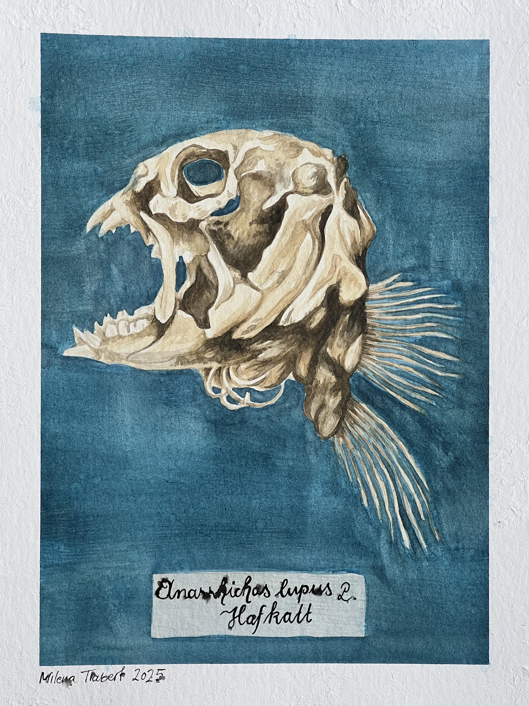

Finland vacation 2024
We were in Finland for my 25th birthday in 2024 and I drew two watercolor postcards.
Helsinki Fort
Porvoo
Nighttime city

Fish skeleton
Specimen from the Uppsala Zoology Museum
Artichoke
Artichoke plant from the Uppsala Botanical garden, reference picture taken by me.